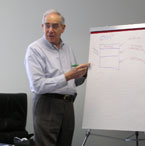

Our Mission-Changing LivesWriting computer programs can be a very satisfying personal experience and lead to a rewarding high-tech career. We believe that children can learn computer programming at grade and middle school ages, and that their lives can be changed in a positive way through the self-confidence gained from the mastery of computer programming skills and programming as an after-school activity. The skills learned at WTS will equip children to compete in an increasingly flat world and prepare them for high-paying jobs that await both High School and College graduates in computer programming. U.S. Technology LeadershipOnly 26% of U.S. high schools require computer programming courses, and computer programming instruction is not offered in public grade or middle schools. |
We are unique in our approach to teaching children these skills before they typically get turned off to science in their early teens. This is a time when girls are particularly susceptible to opt-out. U.S. technology leadership is at risk, and a shortage of one million programmers is predicted over the next ten years. Customizable ApproachWe offer flexible, individually customized learning schedules in a small classroom setting. Transportation can be
arranged and tuition assistance may be available based on family needs.
|